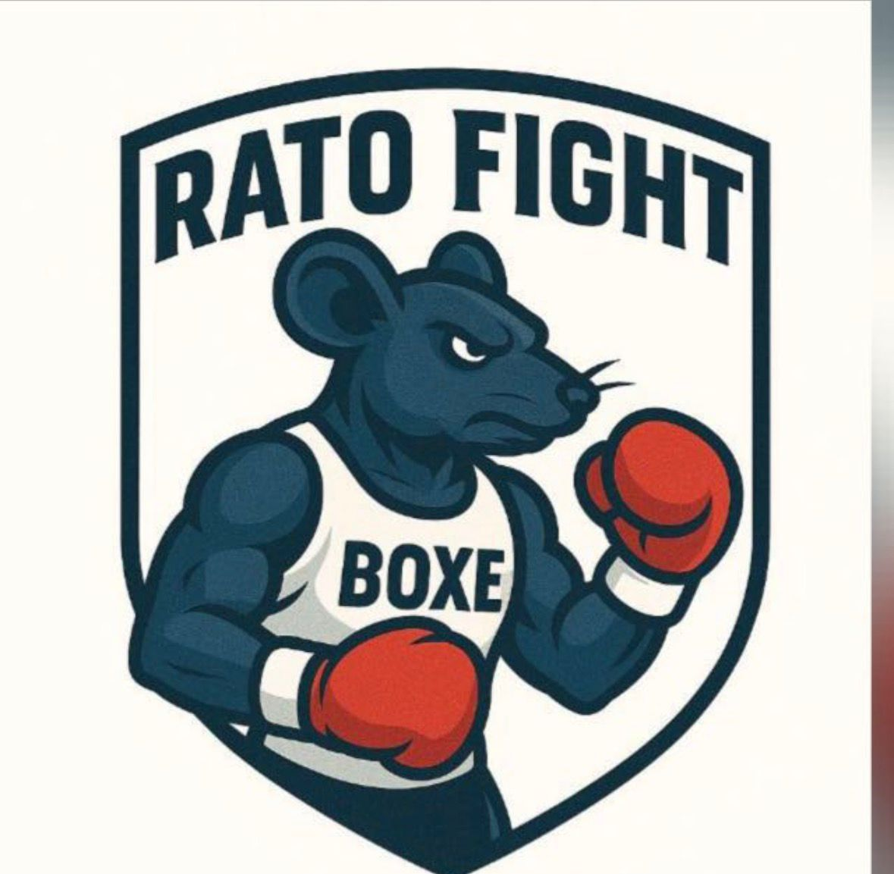

Disciplina • Defesa Pessoal • Artes Marciais
Alunos
Anos de experiência
Modalidades

O Boxe é uma das artes marciais mais tradicionais e eficientes do mundo. Conhecido como a “nobre arte”, ele combina técnica, estratégia, velocidade e resistência física. Durante os treinos os alunos aprendem fundamentos importantes como postura de luta, movimentação de pés, esquivas, bloqueios e diferentes tipos de golpes como jab, direto, cruzado e uppercut.
Além das técnicas de combate, o boxe trabalha intensamente o condicionamento físico. Os treinos envolvem exercícios de cardio, treino em saco de pancadas, manoplas, corda e circuitos funcionais que ajudam a desenvolver força, explosão, coordenação motora e resistência muscular.
Praticar boxe também é excelente para a saúde mental, pois ajuda a aliviar o estresse, melhora a concentração e aumenta a autoconfiança. É uma modalidade indicada para quem deseja entrar em forma, aprender defesa pessoal e desenvolver disciplina.
O Karatê é uma arte marcial tradicional japonesa baseada na disciplina, no respeito e no desenvolvimento físico e mental. A palavra Karatê significa “mãos vazias”, pois as técnicas utilizam principalmente o próprio corpo como ferramenta de defesa e ataque.
Nos treinos os alunos aprendem diferentes técnicas como socos, chutes, bloqueios, movimentações e posturas de combate. Também são praticados os katas, que são sequências de movimentos que simulam situações reais de combate e ajudam a desenvolver coordenação, equilíbrio e precisão.
O Karatê é uma excelente atividade para crianças, adolescentes e adultos, pois ensina valores importantes como disciplina, respeito, foco e autocontrole. Além disso, melhora a postura, a flexibilidade, a resistência física e a concentração.
O Krav Maga é um sistema de defesa pessoal desenvolvido para situações reais de perigo. Criado inicialmente para treinamento militar, ele foi adaptado para uso civil e hoje é considerado uma das formas mais eficientes de autoproteção no mundo.
Diferente das artes marciais esportivas, o Krav Maga ensina técnicas rápidas e diretas para neutralizar ameaças e escapar de situações de risco. Nos treinos os alunos aprendem defesa contra agressões, agarramentos, estrangulamentos e ataques inesperados.
O treinamento também trabalha o controle emocional em situações de estresse, a consciência do ambiente e a capacidade de reagir com segurança. Além de aprender defesa pessoal, os praticantes desenvolvem condicionamento físico, agilidade, força e autoconfiança.
O Aikido é uma arte marcial japonesa que se baseia na harmonia entre corpo e mente. Diferente de muitas outras artes marciais, o objetivo do Aikido não é derrotar o adversário pela força, mas sim controlar o ataque utilizando o movimento e o equilíbrio.
Durante os treinos os alunos aprendem técnicas de projeção, torções articulares e controle do oponente. Essas técnicas utilizam a energia do próprio agressor contra ele, tornando o Aikido uma arte marcial eficiente mesmo para pessoas que não possuem grande força física.
Além da defesa pessoal, o Aikido desenvolve equilíbrio, coordenação, flexibilidade e concentração. É uma prática que também trabalha aspectos mentais como calma, autocontrole e disciplina, sendo ideal para quem busca evolução física e mental.